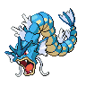

Назад
Гиарадоса
Гиарадоса — Покемон 1 поколения под номером 130 в Покедекс. Обитает он в регионе Канто и относится к Водному и Летающему типу. Это последняя постоянная стадия эволюции Покемона Мэджикарпа. Когда Мэджикарп превращается в Гиарадоса, клетки его мозга претерпевают структурную трансформацию. Говорят, что эта трансформация виновата в дикой жестокости этого Покемона.
Тип:
Водяной
Летающий
Эволюция

# 130 Гиарадоса
Финальная стадия